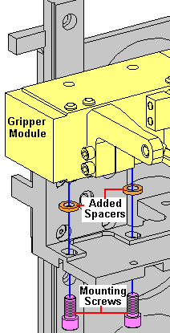
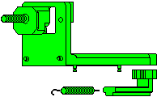
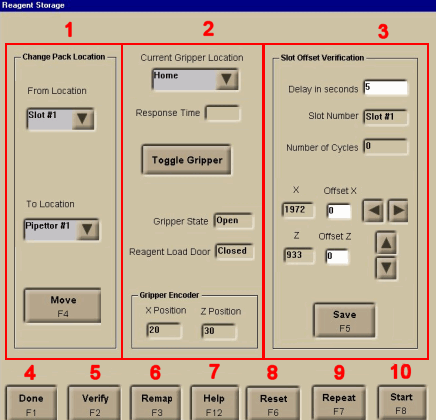

Troubleshooting Reagent Storage
Purpose
This document provides troubleshooting information for the reagent storage module.
When to Perform
- Reagent gripper
- Temperature: Peltier or air
- Reagent bar code reader (BCR)
- Reagent load tray
- Waste door
Cautions
| When Performing... | Observe These Cautions |
|---|---|
| Storage Slot Offset Verification | This operation fails if more than one pack is loaded. |
| Reagent Exerciser Cycling |
|
| Remapping | All on-board expired packs are unusable. |
Causes of Errors
Gripper—Motion or Home Errors
| Event Log Message or Behavior | Causes | Resolution |
|---|---|---|
| ReagentSupply encoder is NAK. | Reagent storage module interface PCB memory loss.
Note: If the instrument has been powered off for several days, loss of memory is normal.
|
|
|
Reagent gripper home was not found.
Reagent gripper motion errors. |
Failure to home: Loss of reagent storage module interface PCB memory. | |
Broken, dirty, or binding parts:
Note: If a sensor misreports the gripper open or closed status, then the gripper can strike the first row of reagent storage slots when attempting to home in the z-axis.
|
|
|
Loose parts:
|
|
|
Home sensor:
|
|
|
Physical obstructions:
Note: The waste chute is not an alignment position.
|
|
|
|
Electrical issues: loose or defective electrical connections. |
|
|
|
Reagent gripper motion errors occurring with abnormal gripper motion patterns. |
The gripper has abnormal directional movements while attempting alignments. |
Initialize with Remap selected. If the reagent storage module subsystem (software) becomes disabled, the module might operate oddly until an initialization with remap is performed to enable all subsystems. |
|
The gripper moves half the expected distance in SMC test, Device Diagnostics, and Initialization. This symptom indicates that the MCC motor control software did not load correctly because of a power reset while using the SMC test program. Some motors might be running in Half-Step mode. |
Reboot the AU and the PC.
Note: When rebooting the Privacy & Security compliant Windows 8 or Windows 10 PC, you must enter security password "Access2Admin" when prompted to launch Windows.

|
|
|
The gripper crashes on the ceiling of the reagent storage module during initialization, homing of the gripper, or normal movements. |
|
Gripper—Pack Open or Close Errors
| Event Log Message or Behavior | Explanation | Causes | Resolution |
|---|---|---|---|
| Reagent pack gripper did not grip the reagent pack. | The reagent gripper did not grip the pack. The gripper detected a Closed status rather than a Pack-present status when it tried to grip the pack.
or The gripper detected a jam or Bad-grip status rather than a pack-present status when it tried to grip a pack. Read the event log details to determine which issue occurred. |
|
|
| Reagent pack gripper did not release the reagent pack |
The gripper did not detect a pack when placing the pack just before pack release. |
||
| Reagent gripper did not grip the pack beneath the pipettor |
The gripper did not detect a pack when gripping a pack in a pipettor slot. |
|
|
| Reagent gripper did not grip the pack in the reagent load tray |
The gripper detected a closed status rather than a pack-present status when it tried to grip a pack. |
|
|
| Reagent pack dropped or gripper sensors failed |
The gripper dropped a pack or the gripper sensors are not functioning correctly. |
|
Refer to the Examine Gripper and Exercise Gripper troubleshooting procedures in this document. |
| Reagent pack gripper failed to close or gripper sensors failed |
The gripper detected a jam or a bad-grip status or open status rather than a closed status. |
|
|
| Reagent gripper failed to open or gripper sensors failed |
The gripper detected a jam or a bad-grip status or closed status rather than an open status. |
Reagent Load Tray and BCR Errors
| Event Log Message or Behavior | Causes | Resolution |
|---|---|---|
| Reagent load tray: Failure to read bar code at pack position 1 (2, 3, or 4) |
|
|
| Grinding noise from the reagent load tray.
Reagent load tray is jammed |
|
|
| Reagent load tray to BCR auto-alignment failed | The auto-alignment contains several software bugs.
Note: The auto-alignment feature does not save alignments. and is likely to fail if the initial alignment is too far away from the center of the bar code label.
|
Do not use the auto-alignment option for the reagent load tray to BCR. Perform a manual alignment.
Note: Refer to the
RS: Aligning Reagent Load Tray to Barcode Reader
procedure.
|
| The load tray moves half the expected distance in SMC test, device diagnostics, and during initialization. | This symptom indicates that the MCC motor control software did not load correctly because of a power reset while using the SMC test program. Some motors might be running in Half-Step mode. |
Reboot the AU and the PC to correct the issue.
Note: When rebooting the Privacy & Security compliant Windows 8 or Windows 10 PC, you must enter security password "Access2Admin" when prompted to launch Windows.
|
Reagent Supply Door Errors
| Event Log Message or Behavior | Causes | Resolution |
|---|---|---|
| Reagent supply internal status is unknown. Remap required. |
The reagent storage cover has been opened or the cover interlock switch has detected an open condition. The map of the packs has been deleted from the instrument memory. If the framus was removed or the reagent storage interface PCB was recently replaced, then the reagent load tray switch might be connected incorrectly to the cover SW and not the reagent load LED. |
|
| ReagentSupply door is open while power on.
ReagentSupply door is open while power off. |
|
Perform the steps in the Remap troubleshooting procedure in this document. |
Temperature Errors
| Temperature issue | Resolution |
|---|---|
|
Peltier temperature not in range. |
|
|
Reagent storage temperature is too high, please remove all packs. |
|
|
Reagent storage module air temperature too low. |
Move the air temperature thermistor higher inside the module where the air is warmest. The Peltiers control to 3 °C and the module air temp lower limit is 4 °C. |
Waste Door Errors
| Waste Door Issue | Resolution |
|---|---|
| ReagentSupply close waste failed. |
|
| ReagentSupply open waste failed. |
|
Troubleshooting Procedures
| Troubleshooting Procedure | Steps | |
|---|---|---|
| Reset Encoders |
Note:
|
|
| Move Gripper
Note: The encoder counts are visible within the Mechanics screen. This testing procedure is useful when the Mechanics screen cannot be used to move the gripper, for example, when the gripper cannot home.
Caution: Closely observe the gripper movement and do not perform large movements. The SMCTest program does not consider the storage slots. Multiple movements or large movements with SMCTest can create damage to storage slots or the gripper.
|
|
|
| Examine Gripper
 Note:
|
|
|
| Clean Pipettor Nests | Push / Pull |
|
| Clean
 |
Caution: Use caution when removing the pipettor nests from the reagent storage module. Do no lose the springs at the rear of the tensioner.
If any tensioner mechanisms are sticking:
|
|
| Test Cover Switches |
|
|
| Examine Load Tray |
|
|
| Verify Pack Presence & Location |
Note:
|
|
| Remap |
Caution: Expired packs are no longer usable.
Note:
|
|
| Test BCR Read Quality |
|
|
Troubleshooting Procedure - Exercise Gripper
- Select .
- Select Toggle Gripper several times and confirm that the open and close status indicators change.
- If the Gripper fails to open and close, then:
- Select or use OutbitTest.exe to open and close the gripper and confirm air valve operation.
- Check that there is air pressure (possible pinched air tube).
- Use the other function buttons (refer to the figure and table) to confirm that the gripper detects and moves packs between locations in the reagent storage module.

| REF | Name | Description | Notes / Steps to Use |
|---|---|---|---|
| 1 | Change Pack Location | Moves the pack from one slot to another slot. |
|
| 2 | Current Gripper Location |
|
|
| 3 | Slot Offset Verification |
|
Warning: This procedure allows the DxI to move without warning. Never place hands inside the storage module until the
Stop button has been selected.
|
| 4 | Done | Exits the Reagent Storage Subsystem Diagnostics. | |
| 5 | Verify | Verifies all current pack locations against the current map in memory. | |
| 6 | Remap | Creates a map for all packs in the reagent storage. | |
| 7 | Help | Links to the DxI help system. | |
| 8 | Reset | Resets all nest verification offsets (alignments) to zero. | |
| 9 | Repeat | Moves the reagent gripper with current pack to above the waste chute and back to the original position. | |
| 10 | Start | Starts the Slot Offset Verification routine (REF 3). |